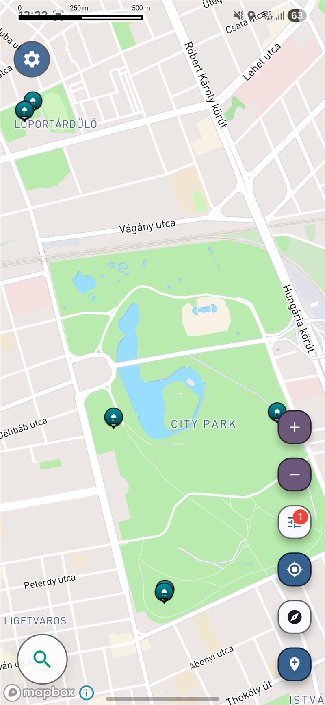

여행에 유용한 지도
주변의 무료 샤워 시설을 찾아보세요
자동차 여행, 밴 라이프, 배낭여행 중 무료 샤워 시설을 찾아 상쾌하게 쉬어 가세요. iOS와 Android용 무료 앱을 다운로드해 주변 위치를 살펴보세요.
무료 · iOS 및 Android
4.9 1,000+ 다운로드 수 App Store & Google Play

현재는 제한된 미리보기만 확인하실 수 있습니다.
여행 중 샤워 시설을 찾기가 어려운 이유
- 여행객을 위한 샤워 시설은 캠핑장, 공공 시설, 해변가, 그리고 쉽게 찾아내기 힘든 지역 사회 시설 곳곳에 흩어져 있습니다.
- 배낭여행객, 캠핑카 여행객, 자전거 여행객, 로드 트립 여행객들은 종종 한 곳에서 명확하게 정보를 찾을 수 있는 대신, 여기저기 흩어진 조언에 의존하곤 합니다.
- 대부분의 주요 지도 서비스는 장시간 여행을 계획할 때 실용적인 위생 시설을 우선적으로 안내하지 않습니다.
지도에서 샤워 시설 찾기
Voyager Maps에서 샤워 카테고리를 선택하면 주변이나 이동 경로 근처의 시설을 볼 수 있습니다. 공공시설과 해변의 샤워 위치를 살펴보고, 정보가 제공된 곳은 이용 조건과 운영 시간도 확인하세요.
샤워 카테고리에서 공공시설과 해변의 샤워 위치를 살펴보며 무료로 이용할 수 있는 곳을 찾아보세요.
밴 라이프, 배낭여행, 장거리 운전 및 기타 이동형 여행에 유용합니다.
이용 조건과 운영 시간이 제공된 곳은 해당 정보를 확인해 여행 중 들를 장소를 계획할 수 있습니다.
무료 앱으로 주변 샤워 시설 찾기
iOS와 Android용 무료 앱 Voyager Maps를 다운로드하고 주변이나 이동 경로 근처의 무료 샤워 시설을 찾아보세요.
여행 중 주변 무료 샤워 시설을 찾는 방법
주변의 무료 샤워 시설을 찾는다면 공공시설과 해변의 샤워 위치부터 살펴보세요. 이용할 수 있는 시설은 지역마다 다릅니다. 자동차 여행, 밴 라이프, 배낭여행 중에는 Voyager Maps의 샤워 지도로 현재 위치나 다음 목적지 주변의 공공 샤워 시설을 살펴보고 씻고 쉬어 갈 장소를 찾아볼 수 있습니다.
Voyager Maps는 iOS와 Android에서 무료로 사용할 수 있는 앱입니다. 샤워 시설뿐 아니라 식수와 화장실 위치도 찾아 여행에 필요한 정차 지점을 함께 계획할 수 있습니다. 방문 전에는 해당 장소에 제공된 운영 시간과 이용 조건을 확인해 일정에 맞는 곳을 선택하세요.